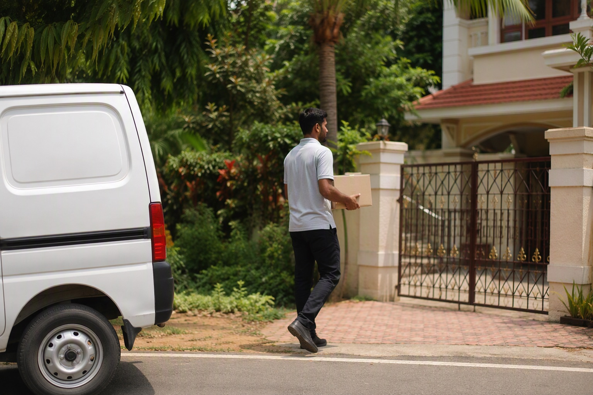

Finolex Wires Near Bangalore: Buying for Sites in Hosur, Devanahalli, Tumakuru, Ramanagara and the Outer Ring

If your site is near Bangalore rather than in it, the most reliable way to get original Finolex wire is usually to buy it from an authorised distributor in the city and have it delivered, rather than from the nearest shop to the plot. Mount Cable India delivers free across Bangalore city and supplies the surrounding towns by road transport against a written quotation, with material and freight itemised separately, and every carton can be scanned before dispatch and again on arrival.
Why "near Bangalore" is where the problem is worst
Bangalore's growth has pushed house construction well past the city limits: Devanahalli and the airport corridor, Doddaballapur, Nelamangala, Bidadi, Kanakapura Road, Anekal, Attibele, Sarjapur, Hoskote, Whitefield's eastern fringe and Hosur across the Tamil Nadu border. Each of these has a few electrical shops that serve the new sites. Most are honest. But structurally they are the hardest place in the region to buy branded wire safely:
- Thin stock. A small shop holds a few coils of the fast sizes and orders the rest. The order comes from wherever is cheapest that week, which is not always a distributor.
- No brand relationship. Almost none of these shops hold a Finolex authorisation. They cannot show a certificate because they have never had one.
- The electrician chooses the shop. On out-of-town sites the owner is rarely present, so the electrician buys, the shop pays the electrician a commission, and the owner sees only a bill.
- Distance from recourse. If a coil is wrong, the shop is forty kilometres from anyone who can do anything about it.
None of this means a site near Bangalore cannot get original Finolex. It means the material should come from a place that can prove where it came from.
How supply to sites near Bangalore works
| Your site | How we supply | Payment |
|---|---|---|
| Inside Bangalore city (including Yelahanka, Electronic City, Whitefield, Kengeri, Sarjapur Road) | Free delivery, next day, often same day | Pay on delivery after scanning |
| Outer ring towns (Devanahalli, Doddaballapur, Nelamangala, Bidadi, Anekal, Attibele, Hoskote, Kanakapura, Magadi) | Own vehicle or road transport, quoted per consignment | Against written quotation; cartons scanned before dispatch, record sent on WhatsApp |
| Hosur and the Tamil Nadu side | Road transport with interstate e-way bill on a GST invoice | Against written quotation |
| Karnataka towns further out (Tumakuru, Ramanagara, Kolar, Mandya, Mysuru) | Road transport, freight itemised separately | Against written quotation |
For a whole-house quantity the freight is a small fraction of the material value. For two coils it is not, and we will tell you plainly when buying locally makes more sense. The bulk orders guide covers the paperwork for larger consignments.
What to do if you must buy locally
Sometimes the job cannot wait for a delivery. In that case buy the minimum you need and apply the same discipline you would anywhere:
- Ask for the Finolex authorisation certificate. Most shops near Bangalore will not have one; that is information, not an insult.
- Scan the outer QR on the carton before paying. Open one carton and scan the inner QR too.
- Check the price against a published reference. Ours are on the buy Finolex wires page. A local price well below it is the warning, not the bargain.
- Insist on a bill in your own name with the range and size written on it, not "wire, 10 coils".
The check that settles it, wherever you buy
Every Finolex carton carries two QR codes. The outer code is printed on the carton label next to the size, grade, length and batch number; scanning it opens Finolex's own verification page and confirms the carton is registered. The inner code is inside the box and can only be reached after opening it; it confirms the contents are what Finolex packed. Both must pass. A genuine carton can be emptied and refilled, in which case the outer code still verifies and only the inner code fails. Do both scans at your own site, before paying. The step-by-step guides are here: outer QR and inner QR.
Reference pricing from a distance
Even if you never order from us, use our quote as your reference. Send the list on WhatsApp +91 88676 76700, get an itemised quote within 60 minutes, and hold the local shop to it. When the local price is close, buy local and scan. When it is far below, you have your answer.
Cross-check us. Send your list to WhatsApp 88676 76700 for an itemised quote within 60 minutes and use it as your reference price anywhere in Bangalore. There is no obligation to buy from us — plenty of people ask purely to check someone else.
Frequently asked questions
Can I get Finolex wires delivered to a site near Bangalore?
Is it safe to buy Finolex wire from a small shop near my site outside Bangalore?
Why is duplicate wire more common on the outskirts of Bangalore?
Does Mount Cable deliver to Hosur?
How much does transport add to a Finolex order outside Bangalore?
Can I verify a Finolex consignment before it is dispatched to me?
Ready to order for your home?
Upload your wiring list for an instant quote — 100% original material, free next-day delivery across Bangalore.